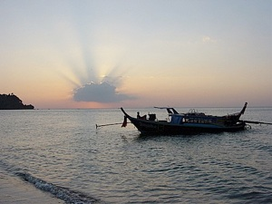
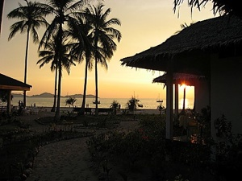
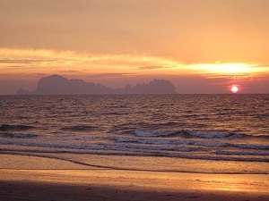
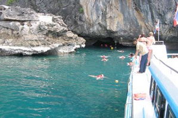

THAILAND


TRANG
Day 1
For this tour, the clients should arrive the day before the tour or early in the morning the same day. After you arrive in Trang, you will be transported directly to Pak Meng Pier, and your island hopping will start. This first day we will take you directly to
Koh Chuek and Koh Mah. There will be plenty of time for swimming, sunbathing, snorkelling or fishing. Your guide could give you your first fishing-instructions and eventually you could “catch” your own meal. Next stop is the popular Koh Ngai, time for lunch (not included) and to relax on the beach, maybe a walk along the beach. At the end of the afternoon, we will arrive at Hat Farang on Koh Mook Island, one of the most beautiful beaches in the Trang area. Overnight on Koh Mook in a resort wih bungalows with Fan or Aircon and private bathroom.
Day 2
After breakfast and check-out, we will visit one of Trang”s highlights, “Tham Marakhot”, the Emerald Cave on Koh Mook. Approaching the western cliffs of Ko Mook, the entrance to Emerald Cave is hard to spot, indeed it is almost hidden at high tide. You will have to enter (swimming) a small tunnel that zigzags for some 80 metres through solid rock before emerging into an enchanting small lagoon, totally surrounded by towering cliffs.
Another one hour with our boat and we reach the pristine beach of the Bounty-Paradise-island Koh Kradan. Here it is possible to snorkel directly from the beach. We continue the tour to Koh Libong, the biggest island in the Trang Sea. In the late afternoon we explore this island and its villages by motorbike or pick up truck. Overnight on Koh Libong in a resort with bungalows with Fan or Aircon and private bathroom.
Day 3
Today”s first stop is the unknown Koh Takieng Island with its nice reef, isolated beach and light-house. Maybe you will see some sharks while snorkelling. Next the beautiful twin islands of
Koh Lao Lieng. Under the high cliffs and on the beach, we will visit the temporary fisherman village. We will prepare our lunch with the fishermen and enjoy the freshly caught delicious crabs and other sea-food. After a refreshing swim, we have less than one hour to go to “land” on the beach just in front of Koh Sukorn Beach Bungalows, where you will stay the coming 3 nights. Koh Sukorn counts about 2,800 inhabitants in 4 villages, mainly fishermen and farmers. There are only a few cars on the island, transport by foot and motorbike (taxi). Koh Sukorn Island (8 x 4 kms) is rather flat, 2 hills however reaching 150 metres.
Day 4 & 5
To get familiar with Koh Sukorn, in the morning of day 4, we will organise a Sukorn Island Tour, half day tour by motorbike-taxi or pickup truck: visit a rubber-plantation and see how “latex” is tapped from the trees, how to make the rubber mats, etc. See fish coming in with the local fishermen at the many beaches. Visit the small crab- & shrimp-market. Handicraft mat-making. Lunch in a private, typical Thai house on the island.
Day 6
Transfer back to Trang Town by private car & boat and end of the tour.


BLOGPOSTS
FREDAG DEN 16. NOVEMBER 2007
ONSDAG DEN 14. NOVEMBER 2007
TIRSDAG DEN 13. NOVEMBER 2007
SØNDAG DEN 11. NOVEMBER 2007
LØRDAG DEN 10. NOVEMBER 2007
LØRDAG DEN 10. NOVEMBER 2007
FREDAG DEN 9. NOVEMBER 2007
FOTO SERIER:

